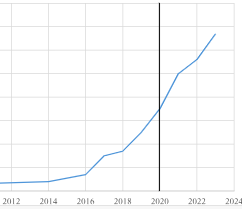
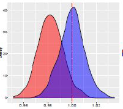
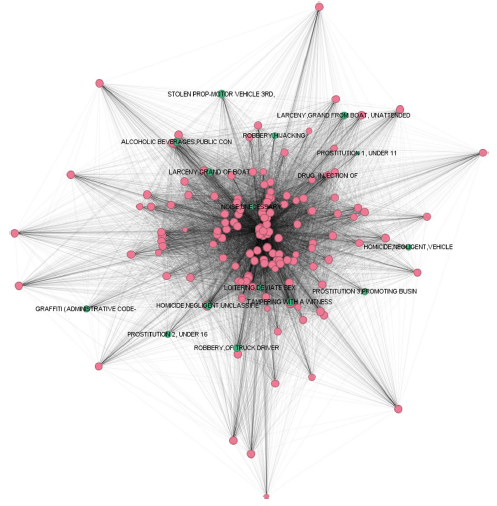

Evolving Technologies in Law Enforcement: Documenting the Continued Growth of Real-Time Crime Centers
Examines the development of RTCCs and their operational characteristics.

Examines the development of RTCCs and their operational characteristics.

Discusses spatial dependence methodological advantages in neighborhood studies.

Identifies brokerage crime types within spatial co-occurrence networks.
Testing if immigrant enclaves provide differential respiratory benefits.